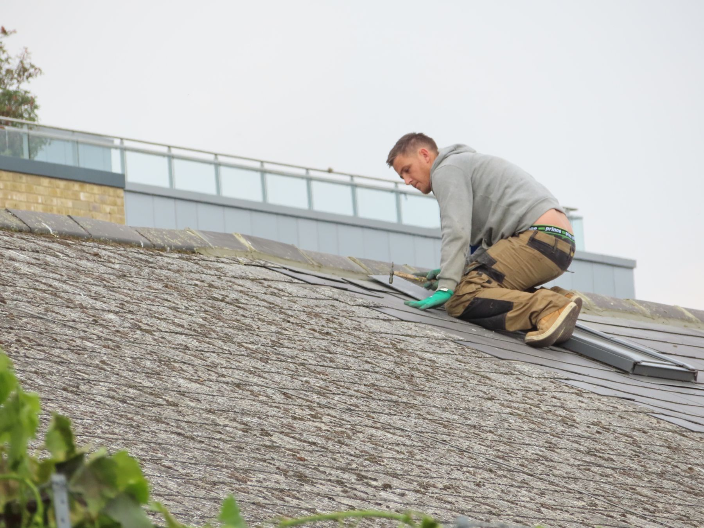
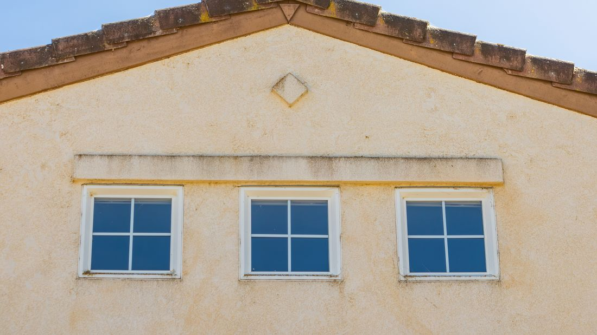
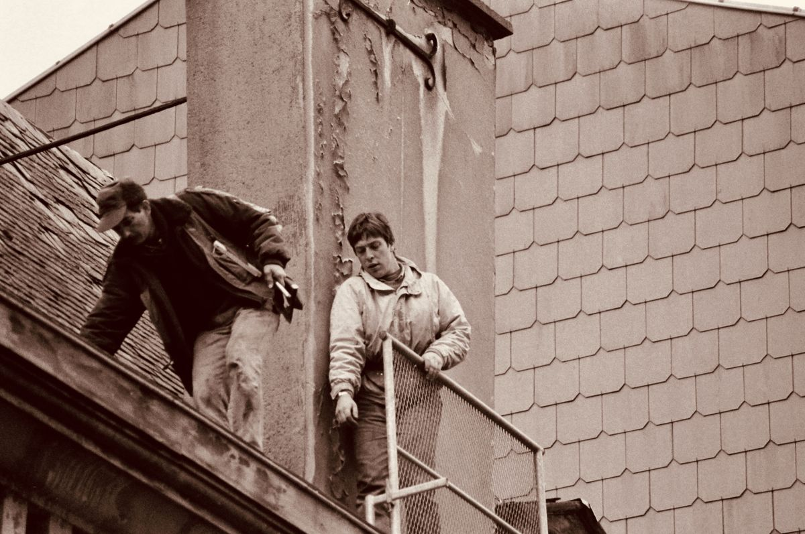

屋根
屋根のカバー工法
古い屋根を残して上から金属屋根をかぶせ、住みながら工事を行うプラン。
工期5日 ／ 約120万円
工事を検討する際の参考に。工事内容、工期、費用の見せ方を事例ごとにまとめています。
古い屋根を残して上から金属屋根をかぶせ、住みながら工事を行うプラン。
工期5日 ／ 約120万円
傷んだ目地を補修し、外壁の色を整えます。
工期7日 ／ 約95万円
たわみやつなぎ目からの漏れを確認し、傷んだ範囲を交換します。
工期2日 ／ 約35万円屋根や雨どいは、地上からでは傷みが分かりにくい場所です。点検時の写真をもとに、いま必要な修理と、様子を見てよい箇所を説明します。
気になる箇所と、いつ頃からかをお知らせください。
職人が伺い、写真と見積書で状態や工事内容をお伝えします。
施工前に日程を決め、完了後の状態を一緒に確認します。
説明と見積りを見てからご検討いただけます。
原因が複数ある場合は、現地調査で状況を確認してからお伝えします。